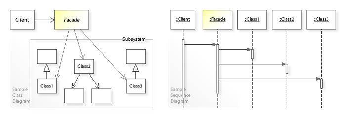
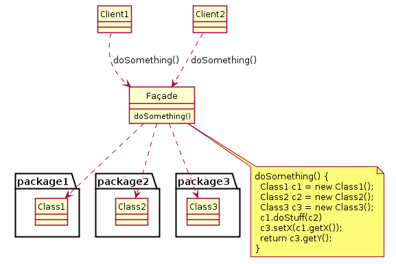
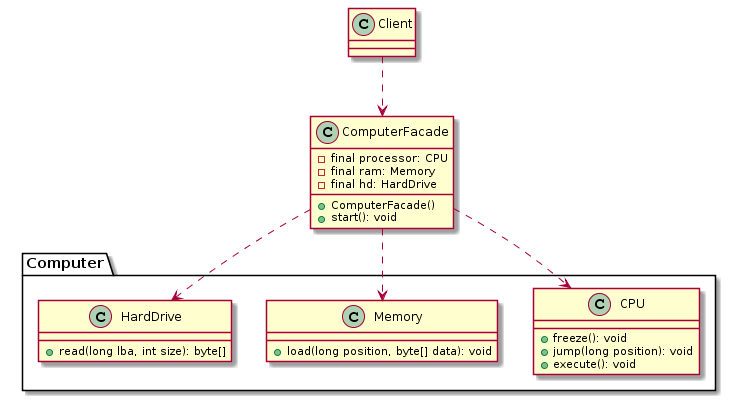

【Design Patterns】外观模式
外观模式(Facade Pattern)

外观模式：为子系统中的一组接口提供一个统一的入口。外观模式定义了一个高层接口，这个接口使得这一子系统更加容易使用。
Facade Pattern: Provide a unified interface to a set of interfaces in a subsystem. Facade defines a higher-level interface that makes the subsystem easier to use.类型： 结构型
Facade Pattern 可以解决哪些问题?
- 为了使复杂的子系统更易于使用，应为子系统中的一组接口提供简单的接口。
- 系统非常复杂或难以理解，每个级别的分层软件都需要一个入口点，或者子系统的抽象和实现是紧密耦合的。
Facade Pattern描述了什么解决方案?
- 根据（通过委托）子系统中的接口实现一个简单的接口.
- 可以在转发请求之前/之后执行附加功能。
用法
- 当需要更简单或更简单的底层对象接口时，使用
Facade。 - 或者，当包装器必须遵循特定接口并且必须
支持多态行为时，可以使用适配器。 - 一个装饰使得可以添加或更改在运行时的(接口/方法)的行为。
几种对比
| Pattern | Intent |
|---|---|
| Adapter | Converts one interface to another so that it matches what the client is expecting |
| Decorator | Dynamically adds responsibility to the interface by wrapping the original code |
| Facade | Provides a simplified interface |
UML

Facade Pattern例子
UML
|
|

子系统部分
|
|
Facade类
|
|
场景类
|
|